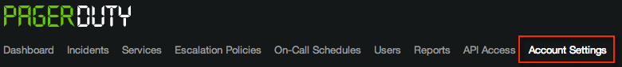
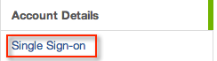
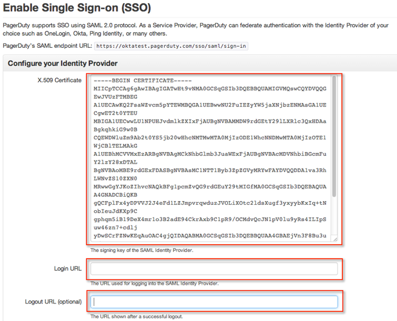
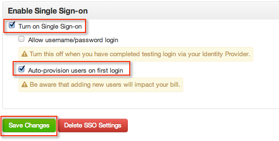

This setup might fail without parameter values that are customized for your organization. Please use the Okta Administrator Dashboard to add an application and view the values that are specific for your organization.
Go to the PagerDuty administration site and sign in. Select Account Settings from the top menu, as shown below.

Select Single Sign-on in the menu that appears on the right side of the window, as shown below.

Copy and paste the following certificate into the X.509 Certificate field. Be sure to include the BEGIN CERTIFICATE and END CERTIFICATE lines, as shown below.
Sign into the Okta Admin app to generate this variable.
Copy the following URL into the Login URL field, as shown below.
Sign into the Okta Admin app to generate this variable.
Copy the following URL into the Logout URL (optional) field, as shown below.
Sign into the Okta Admin app to generate this variable. 
Check Turn on Single Sign-on, and then check Auto-provision users on first login, as shown below.

Select Save Changes, as shown above.
In the Okta Dashboard for the PagerDuty application, select Okta username for the Default username format, as shown below.